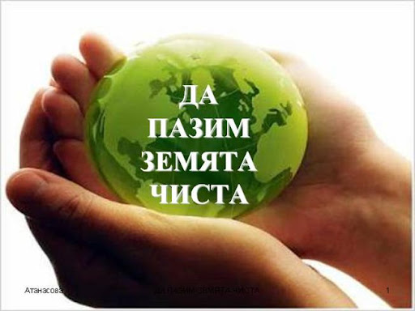
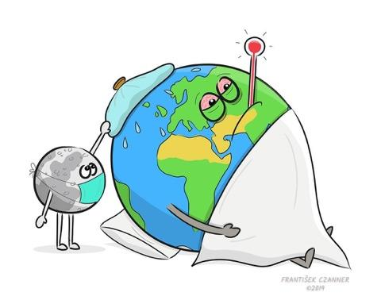
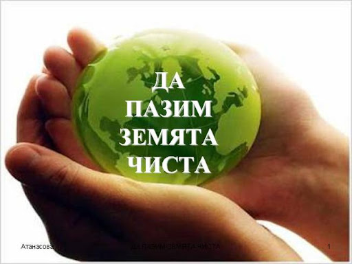
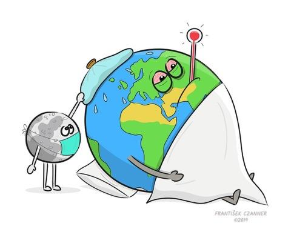

Земята под краката ни е много повече от скали, почва и тиня. Всеки квадратен метър може да бъде уникален по отношение на своя състав, структура и живота, който съдържа и поддържа. Някои съдържат повече скали, богати на определени минерали; други са богати на растителни остатъци с въздушни и водни джобове. Почвата често е пренебрегвана област на биологично разнообразие, но дори в малко парче земя може да гъмжи живот, вариращ от малки организми до гъби и дъждовни червеи, като всички те играят жизненоважна роля за функционирането на почвената екосистема. В това пространство хранителните вещества се превръщат във форми, които растенията могат да приемат, което позволява на биомасата да образува и съхранява въглерод. Именно тук нашата бъдеща питейна вода започва естественото си пречистващо пътуване към подпочвените води.
Начинът, по който използваме земята, често внася допълнителни вещества в тези уникални екосистеми с цел защита на избрани култури или добавяне на хранителни вещества. Замърсителите, изпускани от промишлеността, транспорта и други икономически дейности, могат също да изминат дълги разстояния и да попаднат в почвите, където се разреждат и се съхраняват временно. Почвата, която е компонент на земята, се счита за замърсена, когато замърсителите оказват неблагоприятно въздействие върху здравето на човека или околната среда. С всяка стъпка, която предприемаме, може да постигнем съвсем различна смес и концентрация на замърсители в почвата. Големите вариации на замърсителите, почвите, климатичните условия и начина на земеползване оскъпяват наблюдението и цялостната оценка на замърсяването на земята и почвата. Това, което знаем, се основава най-вече на полеви проби, разпръснати в различни държави.
Нуждаем се от земеделие, за да отглеждаме храната си, но някои неустойчиви селскостопански практики продължават да замърсяват почвите. Растенията се нуждаят, освен всичко друго, от хранителни вещества, за да растат, а интензивното земеделие може да изчерпи хранителните вещества в почвата по-бързо, отколкото природата ги възстановява. Торовете компенсират този недостиг чрез внасяне на допълнителни хранителни вещества. За съжаление, често растенията не поемат цялото количество и излишъкът, който първоначално е в почвата, рано или късно навлиза в езерата и реките. Веднъж попаднал във водите, излишъкът на азот често води до прекомерно развитие на растенията и водораслите, чието разграждане може сериозно да намали нивата на кислород във водата, като уврежда животинските и растителните видове в тази екосистема. Медта се използва широко като фунгицид в лозя и овощни градини от десетилетия. Неотдавнашно широкомащабно проучване показва, че концентрацията на мед в лозята е три пъти по-висока от средната за европейските почви. Към фуражите за животни се добавя мед, която се въвежда в околната среда при разпръскването на оборския тор върху пасища и други земеделски земи. Кадмият е друг силно токсичен метал, който се среща в минералните фосфорни торове. Някои „органични торове“, например утайки от пречистване от отпадъчни води, оборски тор, компост и биологични отпадъци, също могат да въведат широкообхватна комбинация от тежки метали и органични замърсители, ако не са добре регулирани. Химикали от дългосрочната употреба на пестициди се откриват в почвени проби в цяла Европа. Над 80 % от почвите, изследвани в едно проучване, съдържат остатъчни вещества от пестициди, като 58 % съдържат два или повече вида остатъчни вещества.
Селскостопанските практики далеч не са единственият източник на замърсяване на земята и почвата. Лошо управляваните отпадъци — както битови, така и промишлени — са причина за повече от една трета от местните замърсявания, последвано от промишлените дейности. От няколкото милиона обекта, за които се счита, че извършват потенциално замърсяващи дейности в ЕС, подробна публична информация съществува само за част от тях. Замърсяването на земята и почвата също е глобален проблем. Въздухът и водата могат да пренасят замърсители, включително азотни съединения и микропластмасови частици, по целия свят и да ги депонират върху земната повърхност. Замърсители са открити дори на най-високите върхове и на най-отдалечените плажове.
Някои замърсители се разпадат в почвата с времето, но други остават завинаги. В много случаи земята и почвите й са крайната дестинация, където в течение на времето се натрупват различни замърсители. Рисковете от тези химикали и различните им съединения не са напълно известни в целия им обхват. Същевременно въз основа на обектите, от които са взети проби, знаем, че замърсяването на земята и почвата може да има значително въздействие върху здравето на човека, както и върху биологичното разнообразие на почвите и здравето на екосистемите. Тези замърсители могат да засегнат живеещите в почвата организми и евентуално да замърсят нашата храна и питейна вода. Санирането на замърсени терени е трудно и скъпо, но е необходимо за почистването на предишно замърсяване. Местните власти обаче често не разполагат със средства и инструменти за предприемане на възстановяване. Повече от 65 000 обекта са възстановени в ЕС; но в същото време повечето потенциално замърсени места остават извън обсега на тези действия.
Превенцията е най-ефективният и най-евтиният начин за осигуряване на здравословни почви — и по-чиста вода и въздух — в дългосрочен план. Всяка инициатива, насочена към предотвратяване и намаляване на замърсяването — от проектиране на продуктите, по-добро рециклиране, управление на отпадъците, сеитбооборот, прецизно земеделие и намалена употреба на пестициди и торове до по-чист транспорт и промишленост — както и към подпомагане на органите да прилагат ефективни мерки, ще допринесе за намаляване на натиска върху тези жизненоважни екосистеми. Много съществуващи и предстоящи политически инициативи в Европейския зелен пакт — кръговата икономика, стратегията „От фермата до трапезата“, стратегията за биологичното разнообразие, стратегията за химикалите, новата стратегия за почвите и плана за действие за нулево замърсяване — предоставят европейска рамка и подпомагат националните органи и ползвателите на земя да опазват земята и почвите от замърсяване. Допълнителната подкрепа за местните власти и една по-съгласувана политическа рамка на ЕС за почвите биха засилили още повече тези усилия. В крайна сметка замърсяването е само една от многото заплахи, пред които са изправени почвите и земята.